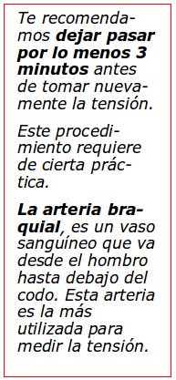

Signos vitales
Son medidas del funcionamiento del cuerpo humano, sus valores normales están basados en el promedio general de las personas.
Son tomadas por médicos, paramédicos, socorristas o quien por emergencia deba aplicar los 1º auxilios, para valorar las funciones corporales más básicas, y saber si algo está fuera de orden
Temperatura corporal
La temperatura normal del cuerpo de una persona varía dependiendo de su sexo, su actividad reciente, el consumo de alimentos y líquidos, la hora del día y, en las mujeres, de la fase del ciclo menstrual en la que se encuentren.
La temperatura corporal normal puede variar de 36,3 a 37,1 °C en varones; y de 36,5 a 37,3 °C en mujeres.
Como tomar la Temperatura (Con un termómetro oral de mercurio).
1 Toma el termómetro del extremo contrario a la ampolla de mercurio, sacúdelo bruscamente hasta que la columna de mercurio este por debajo de los 34º C.
2 Coloca en la boca el termómetro, bajo la lengua (con la ampolla hacia adentro), pídele a la persona que se relaje, no hable, ni muerda el termómetro.
Espera de 3 a 5 minutos y retira cuidadosamente.
3 La lectura de la temperatura la podrás obtener visualizando la columna de mercurio contra el fondo blanco o amarillo de la escala. La temperatura oral es normalmente 0,5 grados superior a la corporal.
El Termómetro siempre debe desinfectarse antes y después de su uso.
Tensión arterial
La sangre no fluye de forma continua, lo hace a borbotones y en oleadas que corresponden a cada latido del corazón.
La toma de tensión es útil para medir la fuerza o presión que ejerce la sangre en las paredes de las arterias.
La presión arterial puede presentar variaciones personales, así como durante el día. Por lo general, cuando se duerme tiende a disminuir; y cuando tiene actividad física se eleva.
La presión tiene dos medidas, la presión sistólica es la presión máxima y la diastólica que es la mínima, y se representa en números, por ejemplo: 120/80.
Como tomar la Tensión Arterial
1 Sienta a la persona en posición cómoda, con brazos y piernas relajadas, sin cruzarlos. En caso de que la persona esté inconsciente o no pueda sentarse, mantenla acostada.
Coloca el brazo sobre el nivel del corazón, si la persona está sentada que descanse el brazo sobre una mesa, si está acostada simplemente que extienda su brazo. Localiza con tus dedos índice y medio dónde sientas las pulsaciones.
2 Coloca la banda del tensiómetro alrededor de su brazo sin ropa, por encima del codo. La banda no debe quedar muy apretada, se recomienda una soltura donde quepan dos dedos entre el brazo y la banda.
3 Coloca el disco del estetoscopio en el lado interior de la hendidura del codo. Infla la banda con la perilla rápidamente, a una presión de 200 a 220 mmHg, el inflar la banda lentamente puede alterar la presión.
Sólo en caso de sospechar hipertensión puede ser conveniente aumentar la presión a 250 mmHg).
Empieza a liberar el aire lentamente, se recomienda estar muy atento para escuchar el pulso del corazón, memoriza o anota el número que el marcador indicó en el primer latido. Esté número es la presión sistólica (la máxima). Cuando el pulso se detenga al seguir desinflando la banda, nuevamente anota o memoriza la presión diastólica (la baja).
Pulso
Es la expansión rítmica de una arteria, producida por el paso de la sangre bombeada por el corazón.
El pulso se controla para determinar el funcionamiento del corazón.
El pulso sufre modificaciones cuando el volumen de sangre bombeada por el corazón disminuye o cuando hay cambios en la elasticidad de las arterias; tomar el pulso es un método rápido y sencillo para valorar el estado de un lesionado.
Cifras normales del pulso
El pulso normal varia de acuerdo a diferentes factores; siendo el más importante la edad.
Bebés de meses |
130 a 140 Pulsaciones por minuto |
Niños |
80 a 100 Pulsaciones por minuto |
Adultos |
72 a 80 Pulsaciones por minuto |
Adultos mayores |
60 a 45 pulsaciones por minuto |
Sitios para tomar el pulso
El pulso se puede tomar en cualquier arteria superficial que pueda comprimirse contra un hueso.
Los más comunes son:
- En el cuello (carotídeo)
- En la tetilla izquierda de bebes (pulso apical)
- En la muñeca (radial)
Otros sitios donde se puede tomar el pulso son : En la sien (temporal), parte interna del brazo (humeral), parte interna del antebrazo (axilar), parte interna del pliegue del codo (cubital), en la ingle (femoral), en el dorso del pie (pedio), en el talón (tibial posterior) y detrás de la rodilla (popliteo).
Recomendaciones para tomar el pulso
Palpa la arteria con tus dedos índice, medio y anular. No palpes con tu dedo pulgar, porque el pulso de este dedo es más perceptible y se confunde con el tuyo.
- No ejerzas presión excesiva, porque no se percibe adecuadamente.
- Controla el pulso en un minuto en un reloj con segundero o digital.
- Anota las cifras para verificar los cambios.
Como tomar el pulso carotídeo
Se usa este punto porque es de fácil localización y por ser uno de los que pulsa con más intensidad.
La arteria carotídea se encuentra en el cuello al lado de la tráquea, para localizarlo has lo siguiente:
1Localiza la manzana de Adán.
2Desliza tus dedos hacia el lado de la tráquea.
3Presiona ligeramente para sentir el pulso.
4Cuenta el pulso por minuto.
Como tomar el pulso radial
También se le conoce como pulso de la muñeca. Usa las yemas de dos dedos. Sitúalas justo debajo de los pliegues de la muñeca en la base del pulgar. Presiona ligeramente hasta que sientas el pulso (la sangre latiendo bajo tus dedos). Si es necesario, mueve los dedos hasta que sientas el pulso.
Aunque es un punto de muy fácil acceso, a veces en caso de accidente graves se hace imperceptible:
11. Palpa la arteria radial, que está localizada en la muñeca, inmediatamente arriba en la base del dedo pulgar.
22. Coloca tus dedos (índice, medio y anular) haciendo ligera presión sobre la arteria.
33. Cuenta el pulso en un minuto.
Como tomar el pulso apical
El pulso apical consiste en la pulsación en el vértice del corazón. En una persona saludable, el vértice del corazón se encuentra ubicado en el lado izquierdo del pecho, apuntando hacia abajo y hacia la izquierda. En ocasiones, también se denomina el “punto de impulso máximo” o PIM.
Este tipo de pulso se toma preferiblemente en niños pequeños:
11. Coloca tus dedos sobre la tetilla izquierda.
22. Presiona ligeramente para sentir el pulso.
33. Cuenta el pulso en un minuto.
Frecuencia respiratoria
La frecuencia respiratoria es la cantidad de respiraciones que una persona hace por minuto.
La frecuencia se mide por lo general cuando una persona está en reposo y consiste simplemente en contar la cantidad de respiraciones durante un minuto cada vez que se eleva el pecho.
La frecuencia respiratoria puede aumentar con la fiebre, las enfermedades y otras afecciones médicas.
Cuando se miden las respiraciones, es importante tener en cuenta también si la persona tiene dificultades para respirar.
Frecuencia respiratoria normal por edad
Bebés de meses |
alrededor de 44 respiraciones por minuto |
Niños |
20 – 40 respiraciones por minuto |
Pre Adolescentes |
20 – 30 respiraciones por minuto |
Adolescentes |
16 – 25 respiraciones por minuto |
Adultos Sedentarios |
12 – 20 respiraciones por minuto |
Adultos Activos |
35 – 45 respiraciones por minuto |
Atletas |
60 – 70 respiraciones por minuto |